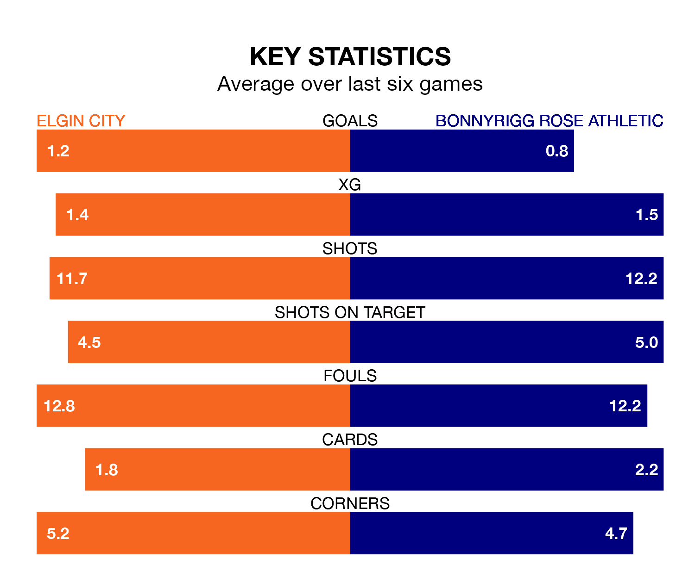

Saturday's match at Borough Briggs sees two relegation candidates play each other, as ninth-ranked Elgin City host seventh-placed Bonnyrigg Rose Athletic.
Elgin have picked up 29 points from their first 29 League Two games, with eight wins and five draws.
That is one point less than Bonnyrigg Rose have collected, having won seven and drawn nine.
In the last 10 years, Elgin and Bonnyrigg Rose have played each other on seven occasions. Elgin won three of them and Bonnyrigg Rose four.
On average, the Black & Whites scored 1.1 goals and Bonnyrigg Rose 1.9 in those matches.
Their last meeting was on February 6, when Bonnyrigg Rose won 2-0 at home.
In Neil Martyniuk, Bonnyrigg Rose have one of the league's sharpest shooters so far this season. He has notched 10 goals in 27 appearances, to sit fourth in the scoring charts.
His goal rate of one every 237 minutes is quicker than that of Russell Dingwall, Elgin's top scorer with a goal every 379 minutes, and a total of five goals in 22 games.
City are in mixed form in League Two, with two wins and two draws from their last six games.
With a win and two draws over that period, Athletic's form is worse – they have taken five points from 18, compared to the Black & Whites' eight.
With 25 goals in 27 games so far this season, the hosts are the league's lowest scorers with 0.9 goals per game. And they are conceding more than average, letting in 46 goals at a rate of 1.7 per game.
The away team, meanwhile, are average scorers, with 1.3 goals per game. They have conceded 1.4 goals per game.
Elgin's last match was on March 2, a 2-1 loss against Clyde, with Jake Dolzanski getting the goal for the Black & Whites.
Bonnyrigg Rose drew 2-2 with Spartans last time out, on Tuesday, with Kieran McGachie on the scoresheet.
Updated: 09:34 (UTC), 08/03/24